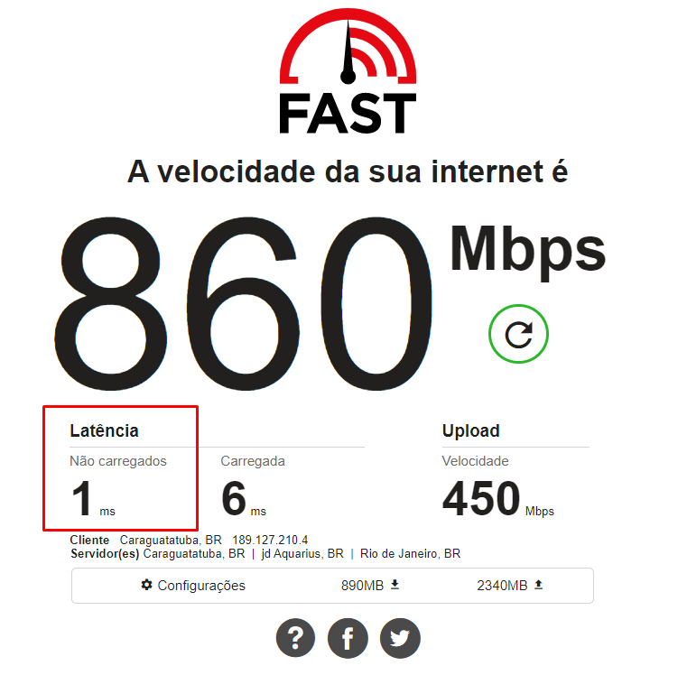
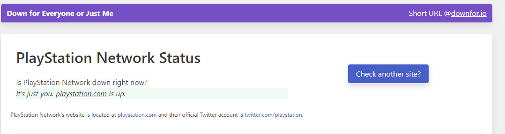
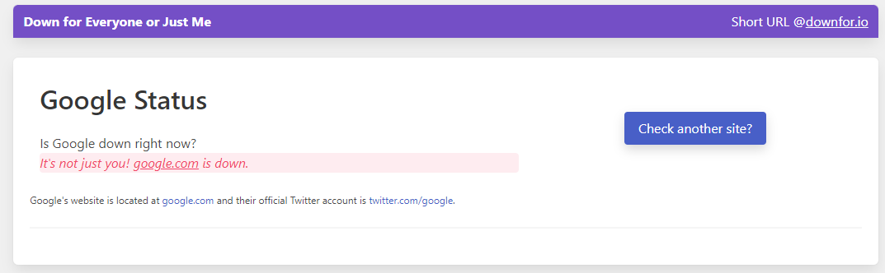

Problemas de conexão com seus jogos?
Aqui listaremos alguns passos para que possa ajudar com suas partidas em seus jogos online:
Ping
Como já informamos na aba de velocidade de internet o ping é importante quando falamos de jogos online, de maneira simples, o ping – também conhecido como latência - é um teste para medir a velocidade da internet entre dois pontos. Dessa forma, é sempre tentar buscar pelo menor valor – o que significa que a conectividade está a melhor possível. Sempre que possível, conecte-se em servidores de jogos que estejam no Brasil, pois a latência até servidores fora do país será normalmente acima de 100ms, devido à distância entre o servidor e seu computador.
Traceroute no Windows
- acesse a linha de comando do seu Windows, basta buscar por CMD na barra de tarefas.
- Após acessar a linha de comando, rode o seguinte comando:
- tracert -d <DESTINO>
- Substitua o
termo <DESTINO>
pelo domínio ou IP.
No exemplo acima, o tracerout identificou que o pacote precisou passar por 12 roteadores para conseguir alcançar o décimo terceiro IP, que é referente ao do servidor de destino.
Verifique se o servidor do seu Jogo esta online
Em alguns casos pode ser que o servidor do seu jogo ou do seu console pode estar offline. Se você tem certeza de que sua conexão com a internet está ativa, firme e forte, chegou a hora de descobrir: "é só comigo, ou com todo mundo?". Para isso, basta acessar um site cuja função é verificar se outros sites estão fora do ar. Um dos mais populares é o "Down for everyone or just me", ou simplesmente isup.me.
Ele funciona de uma maneira muito simples: acesse o isup.me, digite o endereço do site que deseja saber se está no ar ou não e então clique em "or just me?". Pronto. Em alguns segundos você terá uma resposta dizendo se o endereço em questão está online e o problema passa a ser com você, ou então se ele realmente está enfrentando dificuldades.
UP

DOWN
